5. Image Formation
Most methods used to compute realistic images are based on a single geometric operation, called ray casting, that determines the first scene point visible along a ray. Using ray casting, we can derive ray tracing algorithms that compute realistic images by simulating the behavior of light in the real world. This chapter introduces both of these ideas.
5.1. Ray Casting
The basic geometric operation required by all realistic renderers is to determine the first scene point along a ray. A ray, shown in Figure 5.1, is the set of points \(\mathbf{r}(t)\) along a half-open line that start at the ray origin \(\mathbf{e}\) and goes in the ray direction \(\mathbf{d}\). The parameter \(t\) is the distance along the ray from the origin, and is defined over the positive real numbers. For practical purposes, we limit the distance to a finite interval \(t \in [t_{min},t_{max}]\). The minimum distance \(t_{min}\) is set to a small number to avoid numerical problems when considering too-close surfaces. The maximum distance \(t_{max}\) is set to the largest floating point value, to encompass the whole scene, but can be shorter to ignore some objects when necessary. We can write points on a ray as
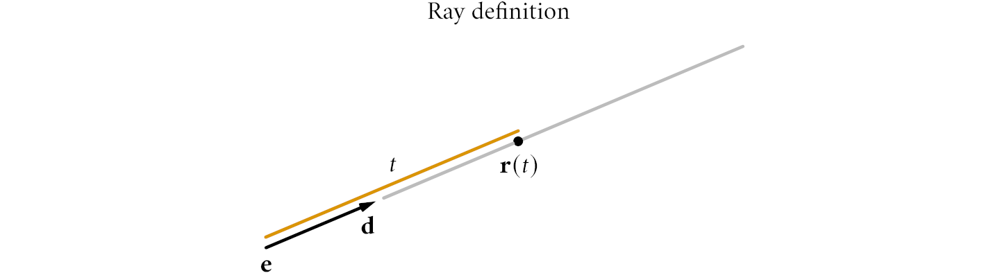
Figure 5.1. Rays are segments specified by an origin, a direction and a minimum and maximum distance from the ray origin. Points on a ray are parametrized over the distance from the origin.
The first scene point along a ray corresponds to the intersection of the ray and scene elements that is closest to the ray origin. Since we parameterize the ray by distance, we can find the closest point by finding the minimum distance along the ray for which an intersection occurs. This operation, shown in Figure 5.9, is called ray casting, and we write it as a function that takes the ray and the scene, and returns the distance along the ray and the intersection point, if an intersection occurs. We use the ray distance to find the closest intersection, while the intersection point is used for further computation, for example to estimate the illumination during rendering. All together, we can write the ray casting function as
Different ray tracing implementations represent the intersection point with data that is optimized for their specific application. For scenes comprised of instance of indexes meshes, the most common choice to represent the intersection point is to use a tuple of instance index, shape's element index and barycentric coordinates of the intersection point with respect to the shape element. From this data, we can recover the intersection point, but also compute normal, texture coordinates and other quantities that are useful for rendering using barycentric interpolation. We can write the intersection data as
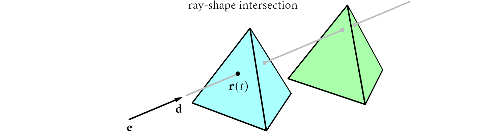
Figure 5.2. The first visible point along a ray corresponds to the intersection between the ray and scene elements that is closet to the ray origin.
5.2. Ray-Sphere Intersection
As a first example, let us consider the intersection between a ray and a sphere. While we do not model scenes as collections of spheres, this is a good starting point to understand the basic concepts of ray casting. In the case of a sphere, we have two intersections, illustrated in Figure 5.3.
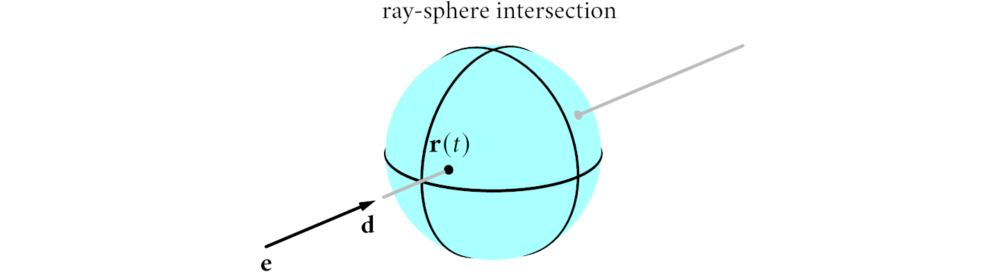
Figure 5.3. Ray-sphere intersection.
We can compute the intersections by finding the ray distances for which a point on the ray belongs to the sphere. To test whether a point belong the a sphere, we can use the sphere implicit representation introduced in previous chapters, and write the sphere as the set of points \(\mathbf{p}\) that are at a fixed distance \(r\) from the sphere center \(\mathbf{c}\). Said another way, a point is on the sphere if it satisfies the equation
If we write a point on the ray as \(\mathbf{r}(t)\), the intersection points can be found by substituting the ray equation in the sphere equation as
This is a quadratic equation in the unknown \(t\). We can solve it by using the quadratic formula, which gives us the two solutions \(t_1\) and \(t_2\) for the ray parameter computed as
The equation has no solution for \(b^2 - 4ac < 0\), which means that the ray and sphere do not intersect. If \(b^2 - 4ac = 0\), the ray is tangent to the sphere and the two solutions coincide. If \(b^2 - 4ac > 0\), the ray intersects the sphere in two points and the solutions are distinct. We can then pick the closest intersection by taking the minimum of the two solutions that satisfy the ray distance bounds \(t \in [t_{min},t_{max}]\).
We just derived the ray-sphere intersection function using an algebraic formulation, without resorting to geometric arguments. For most cases, this is the most convenient way to derive solutions. While geometric methods exists, they are often more complex to derive and less general, since geometric arguments depend on the specific problem at hand. Algebraic methods are more general and can be applied to a wider range of intersection computations, as we will see in the reminder of this chapter.
One concern with the previous solution is that it does not give us the \(\mathbf{u}\) parameters of the intersection point, since we use an implicit representation for spheres that does not explicitly parametrize points. In the case of spheres, we can parametrize the intersection point with the spherical angles with respect to the sphere center, normalized to the unit interval, and compute this parametrization from the intersection point itself. In general though, it is convenient to have intersection methods that return the barycentric coordinated at the intersection directly, as we will see in the next section.
5.3. Ray-Triangle Intersection
Since our shapes are described as collections of elements, we need to compute the intersection between rays and each element type, namely triangles, lines and points. We start with triangles since they are the most common case. In the case of triangles, we have only one intersection point, as illustrated in Figure 5.4, since the triangle is a planar surface.
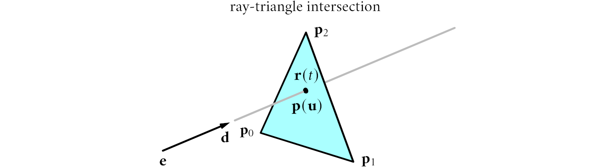
Figure 5.4. Ray-triangle intersections can be computed by finding the ray distance and the triangle barycentric coordinates for which the ray and triangle points are in the same location.
We can compute the intersection by finding the ray parameter for which the ray point belongs to the triangle. We can check whether a point is on a triangle by computing the barycentric coordinates of the point with respect to the triangle, and testing whether the coordinates are in the proper range, i.e.
We proceed by equating the expressions for a point on the ray and a point on the triangle to have the two points be in the same location, as
The previous equality is a system of three equations, since we have three coordinates for each point, in three unknowns: the ray parameter \(t\) and the triangle barycentric coordinates \(u_1\) and \(u_2\). We can solve this system analytically using Cramer's rule to obtain expressions for all the unknowns. Here we skip the derivation of the solution, and just report the final expressions for the unknowns, that are
If the denominator in the previous expression is zero, the ray and triangle are parallel and no intersection exists. Otherwise, we check whether the ray distance is within the bounds specified by the ray and whether the barycentric coordinates are in the unit interval. All together these tests are
The method we just derived uses an algebraic formulation, once again without resorting to geometric arguments. Since we use an explicit representation for triangle points, we compute the intersection barycentric coordinates directly, without the need to derive them later.
Most renderers use this method to compute ray-triangle intersections, since it is efficient and returns all the data we need for shading. The only drawback is that it is not robust, since it can fail for points close to the triangle edges. To solve this issue, some renderers use more robust intersection methods, often called "watertight" intersection, that have better numerical properties. In this book, we will not cover these methods, since they are more complex and used rarely.
5.4. Ray-Point Intersection
Points are the simplest geometric primitive. We use points to represent small particles, such as dust, embers, etc. Points are zero-dimensional, since they have no area, and are only represented by their position. To render them, we consider them as small spheres by adding a radius to the point representation.
To compute ray-point intersection, we could use the ray-sphere intersection method we derived before. As an alternative, we derive here a simpler and more efficient method by observing that we use points to represent particles that are typically smaller than a pixel. Instead of computing a precise intersection, we can approximate the intersection by computing the ray parameter for which the distance between the ray and point is minimal, and test whether the distance is smaller than the point radius, as illustrated in Figure 5.5. This approximation works for small radii in the order of a pixel.
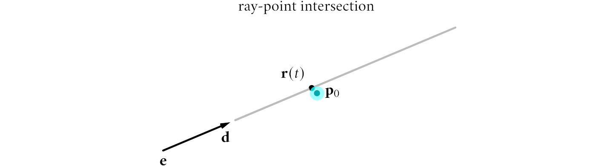
Figure 5.5. Ray-point intersection.
We compute the shortest distance by writing the distance between a point on a ray and the point position with respect to the ray parameter, and minimize such distance. For convenience, we consider the distance squared, since it has the same minimum as its square, and is easier to differentiate. We can then write the ray parameter of the intersection as
To find the ray paraeter minimum, we set the derivative of the squared distance to zero, and solve for the ray parameter as
To test for intersection, we check whether the ray parameter is within the accepted bounds and whether the distance is smaller than the point radius. All together, these tests are
For point intersections, we can just return the ray parameter and zero for the barycentric coordinates, since they are not defined for thin points.
The method we just derived uses once again an algebraic formulation, but this time we compute an approximate intersection. In this case, we cannot compute the intersection point parameters, since the approximation prevents us from doing so. Instead, we will use the point position itself as the intersection point, and base all illumination computation at that position. In the case of very small points this approximation works quite well, both in terms of accuracy and performance.
5.5. Ray-Line Intersection
Line segments are one-dimensional geometric primitives, that we render by associating a possibly-different radius to each vertex that is swept along the line. The resulting surface is a truncated cone with spherical caps. Using different radii at the two vertices lets us approximate lines that change thickness along their length, such as hair, grass, etc.
Just like for points, we can compute ray-line intersection by intersecting the ray with with the surface of a truncated cone, or approximate the intersection by computing the ray parameter for which the distance between the ray and line is minimal, and test whether the distance is smaller than the line thickness. In this book, we will follow the latter approach, illustrated in Figure 5.6.
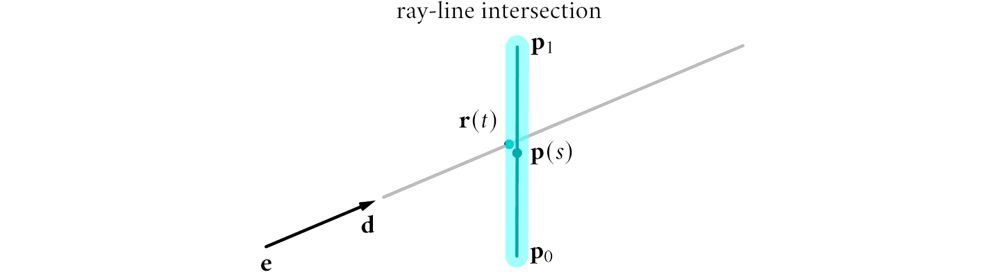
Figure 5.6. Ray-line intersection.
We compute the intersection in a similar manner to the ray-point derivation. We define the intersection as the closest point between the ray and the line, and test whether that ray-line distance at that point is within the line radius. To compute the closest point, we write the distance between a point on the ray \(\mathbf{r}(t)\) and a point on the line \(\mathbf{p}(s)\) as a function of the ray parameter \(t\) and the line parameter \(s\), and minimize this distance as
We solve this equation by setting the partial derivatives, with respect to \(t\) and \(s\), of the squared distance to zero, and proceed by substitution as
By substitution, this gives us the ray and line parameters for the closest point as
To test for intersection, we check whether the ray and line parameters are within their accepted bounds and whether their points' distance is smaller than the line radius \(r(s) = r_0 - s (r_1 - r_0)\) as
5.6. Ray-Scene Intersection
From the intersection of a ray with a single element, we can compute the intersection of a ray with a shape, and then with a scene. The intersection of a ray and a shape is just the ray-element intersection that is closest to the ray origin, considering all elements in a shape, as shown in Figure 5.7. For example, for a triangle mesh, the ray-mesh intersection can be written as
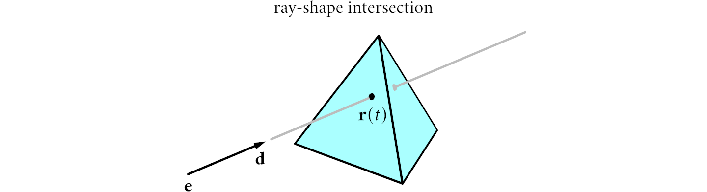
Figure 5.7. The intersection of a ray and a shape is computed by finding the closest intersection for all shape elements.
We can implement this function by looping over all elements in the shape and computing the intersection with each element, keeping track of the closest intersection as we go. A faster alternative is to set the ray maximum parameter \(t_{max}\) to the closest intersection found so far. Since ray-element intersection functions do not report an intersection for a distance larger than the maximum allowed, adjusting the ray maximum parameter lets us find the closest surface. This implementation is preferred since it speeds up execution by more quickly skipping elements as the ray gets shorter.
To compute ray-scene intersections, we first need to define how to compute ray-instance intersections, since scenes are composed of multiple instances. The ray-instance intersection is just the intersection of the ray with the elements of the instance's shape, as shown in Figure 5.8. In doing so, we need to account for the fact that rays and shape elements are specified with respect to two different coordinate systems. Rays are specified in world space, while shape elements are specified in the local coordinates of the instance. To compute ray-instance intersection properly, we can either transform all shape vertices to world space, or transform the ray to local coordinates. The former is more expensive since we need to transform all vertices for each instance, while the latter is more efficient since we transform the ray once per instance only. The latter approach is always preferred for speed.
To transform a ray to the local coordinate system of an instance, we transform the ray origin and direction, and keep the ray parameter bounds unchanged. This work also for non-rigid frames, with the caveat that the ray parameter do not correspond to the distance along the ray in the local coordinate system of the instance, since non-rigid frames do not preserve distances. Once we have the ray in the local coordinate system of the instance, we intersect the ray with the instance's shape. We then transform the local intersection point, if computed, to world space. All together, we can write the ray-instance intersection as
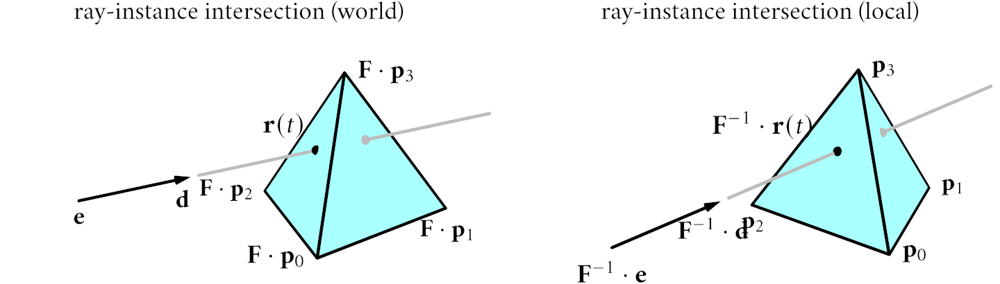
Figure 5.8. The intersection of a ray and an instance is computed by transforming the ray in the instance local coordinates, and computing the ray-shape intersection.
Given the ray-instance intersection, we can compute the ray-scene intersection as the closest intersection among all instances in the scene, shown in Figure 5.9, and written as
We find the closest intersection in the scene by looping over instances and considering their possible intersections with the ray, in a manner similar to finding the closest element in a shape.
Figure 5.9. The intersection of a ray and a scene is the closest intersection
among all instances in the scene.
5.7. Bounding Volumes
Intersection operations are the largest cost in most renderers. Computed as above, they scale linearly with the number of scene elements, making it costly to render large environments. We can observe though that the ray-scene intersection is fundamentally a search operation, where we look for the closest element. The methods discussed so far perform this search with a linear algorithm, testing all elements in the scene. But just like other search problems in computer science, we get logarithmic complexity by sorting the data in a data structure that allows us to quickly prune parts of the search space.
A simple acceleration we can consider is to group multiple elements in a bounding volume that fully contains them. We then test the ray against the bounding volume before testing the elements, as shown in Figure 5.10. If the ray hits the bounding volume, we test the elements contained in the bounding volume. Otherwise, we can skip the elements since the ray cannot intersect them being outside the bounding volume.
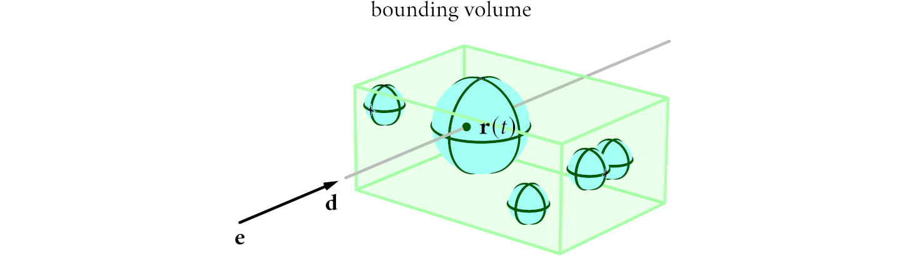
Figure 5.10. The intersection of a ray and a set of primitives can be accelerated by first testing a bounding volume that contains them.
Using bounding volumes is a form of pruning that is effective if the bounding primitive is efficient to intersect with compared to intersecting the enclosed elements. Possible choices for bounding primitives are bounding spheres, axis-aligned bounding boxes and oriented bounding boxes. Of these possible choices, axis-aligned bounding boxes are the most used, since they are efficient to intersect with, cheap to compute, and since they enclose real-world objects relatively well, without leaving too much empty space.
We represent an axis aligned bounding box \(\mathbf{B} = [\mathbf{b}_1, \mathbf{b}_2]\) as the minimum \(\mathbf{b}_1\) and maximum \(\mathbf{b}_2\) coordinate values along each axis, as shown in Figure 5.11. With this notation, we can write the box as the set of points \(\mathbf{p}\) that are contained within the coordinates bounds, as
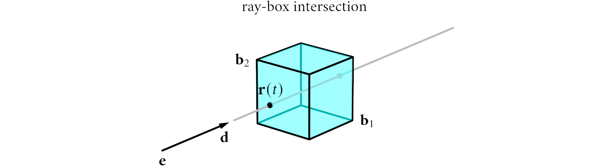
Figure 5.11. An axis-aligned bounding box is defined by its minimum and maximum coordinate values along each axis.
5.8. Ray-Box Intersection
To use bounding boxes, we need to compute the intersection between a ray and an axis-aligned box. For this intersection routine, we only need to test whether an intersection has occurred, rather than returning all intersection data. Ray-box intersection becomes a relatively easy operation if we think of an axis-aligned box as the intersection of three slabs, one for each axis, as shown in Figure 5.12. A slab is the set of points enclosed between two infinite planes. For axis-aligned slabs, the planes are orthogonal to one of the coordinate axis, and the slab is defined by the minimum and maximum coordinate values along that axis. If we consider the slab along the \(i\)-th axis, defined by the coordinate bounds \(b_{1,i}\) and \(b_{2,i}\), we can write points in the slab as
With this notation it can easily to see that an axis-aligned box is the intersection of three slabs, as
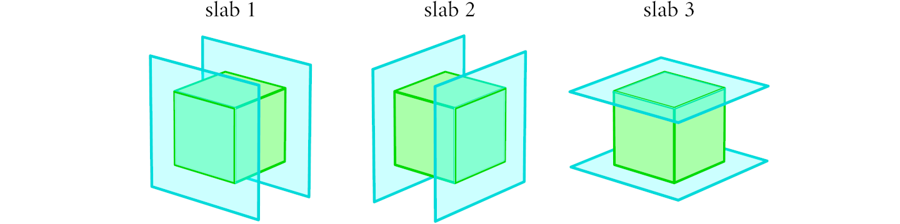
Figure 5.12. An axis-aligned bounding box can be thought as the intersection of three slabs.
To test for box intersection, we first intersect the ray against each slab. Since slabs are axis aligned, and consider only one coordinate, each intersection can be solved as a one-dimensional problem and will give two results, one for each face in the slab, shown in Figure 5.13. The intersections occur in all cases except when the ray is parallel to the slab, since the slab planes are infinite. For the \(i\)-th slab, we can compute the intersection by substituting the \(i\)-th coordinate of the ray point with the slab bounds \(b_{1,i}\) and \(b_{2,i}\), and solving for the ray parameters \(t_{1,i}\) and \(t_{2,i}\) as
The intersections occur when \(d_i \neq 0\), that corresponds to the ray being parallel to the slab. The closest \(t_{a,i}\) and farthest \(t_{b,i}\) intersections are the intersections of minimum and maximum ray parameter. In general, these do not correspond to the intersection with the slab plane of minimum and maximum coordinate values, since the order in which the ray intersect the slab depend on the ray direction. The two intersections define an interval \(I_i\) for the ray parameter for which the ray points are in the slab, written as
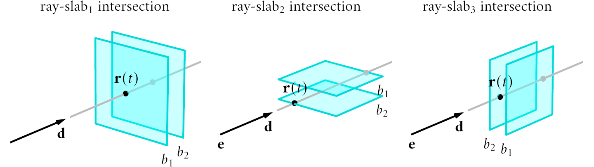
Figure 5.13. The intersection of a ray and a slab defines an interval.
To determine the intersection of the ray with the whole box, we compute the intersected parameter interval for each slab. Since an intersection occurs when the ray point is within each slab at the same time, we can check whether the ray intersects the box by checking if there is a non-empty intersection between the parameter intervals for each slab, written as
We can finally check the ray parameter bounds to skip intersection that are outside the ray bounds. Since the ray parameter bounds form themselves an interval, we can write this test as
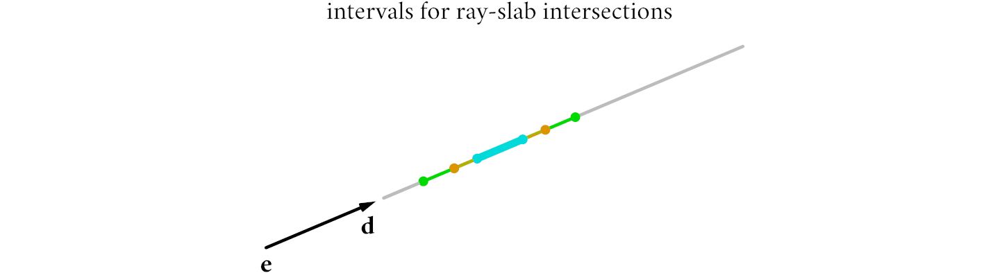
Figure 5.14. The intersection of a ray and three slabs occurs when the intersection between the parameter intervals is non-empty.
We can write all the above equations in a very compact form by using the vector notation we introduced in the previous chapters. The slab intersection intervals can be written succinctly as
For a set of intervals, the intersection correspond to the interval with the largest minimum and smallest maximum. The intersection is empty if the minimum of the maximums is larger than the maximum of the minimums. If we use the notations \(\text{cmin}(\mathbf{v})\) and \(\text{cmax}(\mathbf{v})\) to indicate the minimum and maximum component of a vector, then the interval intersection can be written as
We can combine this test with the ray bounds test as
This vector form leads to a compact and efficient implementation of the ray-box intersection.
5.9. Bounding Elements
We compute the bounding box for a set of elements by computing the bounding box for each element separately, and then computing the box that contain all element boxes. For the shapes we consider in this book, shown in Figure 5.15, we can compute the bounding box easily from the element representation.
A triangle bounding box is the box that contains all triangle vertices. Its minimum and maximum coordinates are respectively the minimum and maximum coordinate values along each axis, written as
Bounding boxes for quads are computed in the same way as for triangles, and written as
A point bounding box is the box that contains the point position enlarged by the point radius. Its minimum and maximum coordinates are respectively the minimum and maximum coordinate of the point position minus and plus the point radius, written as
Similarly, a line bounding box is the box that contains the line vertices enlarged by the line radius at both ends, written as
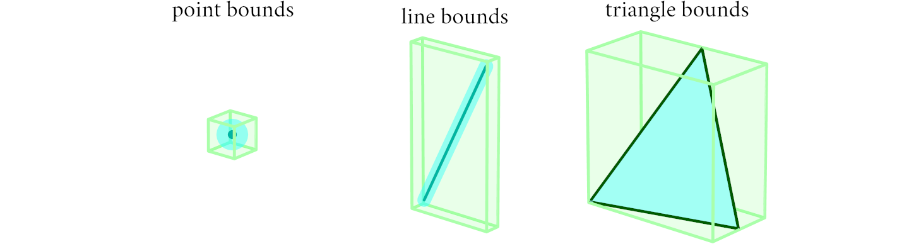
Figure 5.15. Primitive bounding boxes.
The bounding box of a shape is the union of the bounding boxes of all element, i.e. the smallest box that contains all elements boxes. We compute the bounding box union by taking the minimum and maximum coordinate values along each axis of the elements boxes, as shown in Figure 5.16, written as
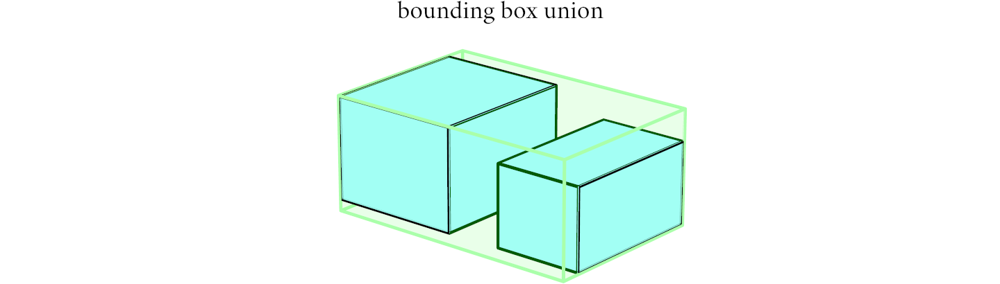
Figure 5.16. The union of two bounding boxes is the bounding box that contains all points belonging to both boxes. This can be used to compute the bounding box of any set of elements.
Finally, we consider the bounding box of an instance that is the bounding box of the instance's shape, whose vertices are transformed to world space, as shown in Figure 5.17. But computing the bounding box in this manner does not scale for large environments, since we need to transform all vertices for each instance. Instead, we can approximate the bounding box of an instance by computing the bounding box of the instance's shape in local coordinates, and then transforming the box to world space. In general, the transformed box is not aligned to the world axes, so we compute the minimum and maximum coordinate of the transformed box corners. In summary, the bounding box of an instance can be approximated as
This approximation does not guarantee that the bounding box is tight, but it is much faster to compute than the exact bounding box, and works well for most scenes.
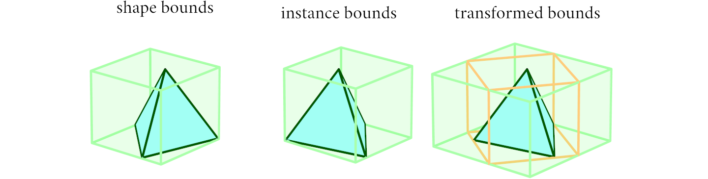
Figure 5.17. Instance bounding boxes.
5.10. Bounding Volume Hierarchies
Using a single bounding box does not give us scalability since the number of elements within the box can still be large. For this reason, we construct a bounding volumes hierarchy, or BVH for short. You can think of BVHs as trees where each node is fully contained by its bounding bbox. The leaves of the hierarchy contain primitives to be intersected, while the internal nodes contain other bounding volumes nodes.
For scenes defined by instances, we often build a BVH for each shape and one for the whole scene. The shapes' BVHs accelerate the intersection of the shape elements, while the scene's BVH accelerate the intersection over scene's instances. This is sometimes called a two-level BVH.
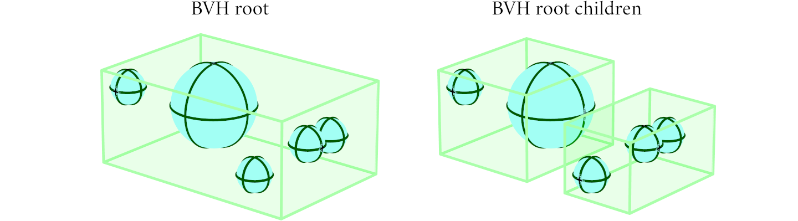
Figure 5.18. Example of a bounding volume hierarchy for a set of shapes.
A possible implementation for a BVH is to represent the tree directly. A node contains the bounding box, and pointers to either other other nodes or scene elements. A possible implementation could be
The intersection of a ray and a BVH is implemented as a depth-first tree traversal. We start at the root, and proceed recursively. For each node, we check whether the ray intersect the node's bounding box. If not, we stop the visit without an intersection. If the intersection occurs, we check the node's children. For internal nodes, the children are other nodes that we visit recursively. For leaf nodes, the children are either shape elements or scene instances. Shape elements are checked for closest intersection, while scene instances are intersected by recursively visit the shape's BVH with the transformed ray. These conditions can be written succinctly as
The previous formula suggest a recursive implementation, that can be sketched as
The representation we just described is rarely used in practice since it is not efficient both in terms of memory usage and since it is not cache friendly due to the nodes being scattered in memory. Most ray tracers use a flattened representation, where all nodes are allocated contiguously as a single array and parent-child references in the tree are represented as indices. A sketch of a possible implementation of flattened BVHs can be written as
Also for efficiency, typical implementations of BVH intersection are not recursive. Instead, the recursion is implemented using looping with an explicit stack to gain speed and make the BVH intersection code more explicit. For the reminder of this book, we will ignore these implementation details and focus on the algorithmic aspects of BVHs.
5.11. Buildings BVHs
Many bounding volume hierarchies can be defined for any given scene. The optimal BVH is the one that best speeds up ray-scene intersection by pruning the largest number of element intersections, while adding the least number of box intersections. As it turns out though, an algorithm to compute the optimal BVH is not known. So most ray tracers use heuristics to build the hierarchy. In this book, we discuss a rather simple one, that works quite well in practice but should not be considered the state of the art.
We build a BVH in a top-down fashion, starting from the root node all the way down to the leaves. For each node, we first compute the bounding box of the elements contained in the node, then decide whether this node should be a leaf by checking if the number of elements is below a threshold. A commonly used threshold is to make a leaf when no more than a few elements are available, say four to eight. This is a good balance between making a small tree and intersecting few primitives. For leaf nodes, we store references to the scene elements in the node and stop recursion. For internal nodes, we split the scene elements in two groups and recursively apply the same procedure.
Different heuristics can be used to split the elements in two groups. The simplest one that works relatively well is to partition the elements by splitting the box in two along the longest axis, and grouping elements based on which side of the split plane they lie on. This procedure is shown in Figure 5.19. If we indicate with \(E_s\) the set of elements to be split, with \(\mathbf{c}_E\) the centroid of element \(E\), and with \(\mathbf{B} = [\mathbf{b}_1,\mathbf{b}_2]\) the node bounding box, we can write the split as
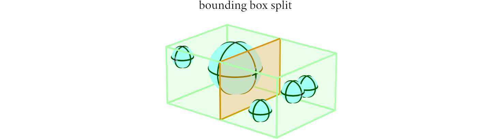
Figure 5.19. We build BVHs recursively. At each node, we split the BVH along its longest axes, grouping elements according to which side their centroid lies, and repeat recursively for each group.
We can build a BVH by starting from the root node and applying the split procedure recursively. The build procedure does not depend on the specific element type, but depends only on the bounding box of the elements. For simplicity of notation, we are going to write the build procedure for a set of elements \(E_s[]\), where we indicate with \(\mathbf{B}_E\) the bounding box of an element \(E\) and with \(\mathbf{c}_E\) its centroid. With this notation, we can sketch a possible implementation as
The use of instancing combined with BVHs lets us model complex environment in a manner that is efficient to store and compute with. Figure 5.20 shows an image of a forest environment rendered with the raytracer we will present in the reminder of this chapter. In this environment, instances are used to scatter copies of objects in the environment, such as the grass leaves and flowers. The scene BVH lets us use several instances to create a compelling scene. The shape BVHs are used for the trees, where leaves are modeled individually.
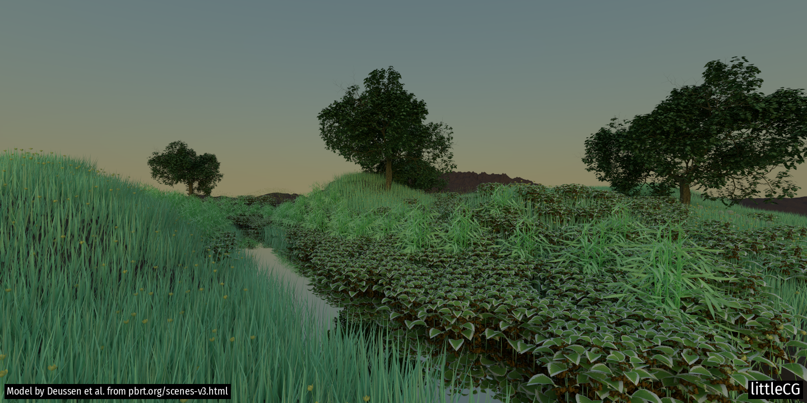
Figure 5.20. A scene with complex geometry made practical by using BVHs. Model courtesy of Deussen et al. from Pbrt.
5.12. Rendering Previews
Ray casting can be used to generate realistic images of virtual environments, as we will see in the reminder of this chapter. We start by showing how to use ray tracing to render scene previews that help us visualize the environment.
We generate images of a scene with the camera model described in the last chapter. In that model, images form on a sensor plane located behind the lens. The color of each image location \(\mathbf{I}(\mathbf{u})\) is the color of the surface point \(\mathbf{p}\) that is visible through the lens point \(\mathbf{e}\) from the pixel location \(\mathbf{q}(\mathbf{u})\). The visible point is determined by casting a ray from the pixel toward the lens. So we can say that \(\mathbf{p} = \text{raytrace}(\mathbf{e}, \mathbf{d}(\mathbf{u}))\). This is shown in Figure 5.21. In this chapter, we only consider pinhole cameras, that have an aperture small-enough to be approximated as a single point.
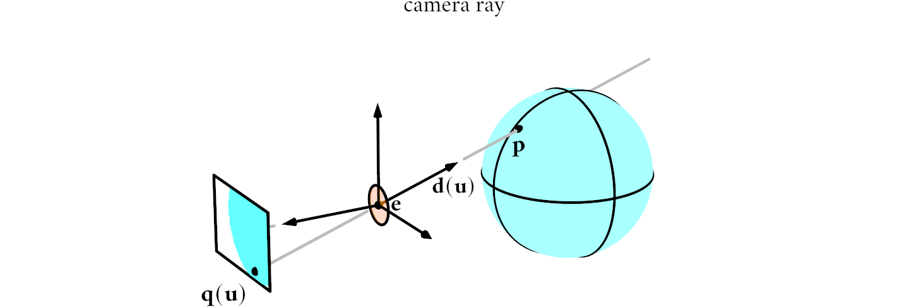
Figure 5.21. Camera ray generation.
As shown in the image chapter, we parametrize images locations with two parameters defined in the unit square \(\mathbf{u} \in [0,1]^2\). In local coordinates, the position of the corresponding point \(\mathbf{q}\) on the film plane is computed by scaling the image coordinates \(\mathbf{u}\) by the film size \(\mathbf{s}\), and shifting them by half the film size to center the image, and by the distance between the lens and the film plane \(l\), which is the lens' focal length. The image parameters need to be inverted to account for the fact that a film plane behind the lens flips the image. Finally, we transform the point to world space as specified by the camera frame \(\mathbf{F}\). In short, we can write the film point as
Since we do not model the internals of the camera, we set the ray origin to the lens center, so that rays originate outside of the camera. The lens center is just the origin of the camera frame, that we can write as
The ray direction is the vector from the film point to the lens center, that can be written as
To generate the final image, we loop over each pixel \(\mathbf{i}\) and set the pixel color \(\mathbf{I}_\mathbf{i}\) as the color at the center of the pixel, as shown in Figure 5.22. For an image of resolution \(\mathbf{r}\), we can write the pixel center as \(\mathbf{u} = (\mathbf{i} + 1/2) / \mathbf{r}\), and the final image as
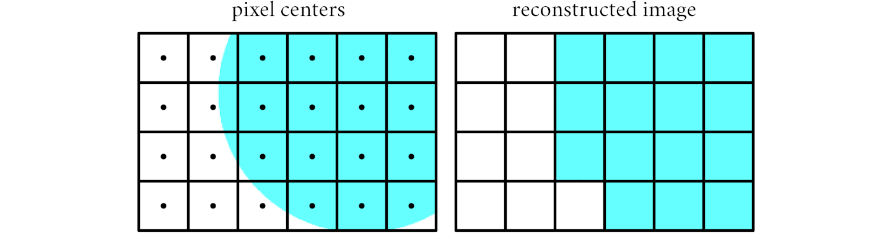
Figure 5.22. A rendering preview generated by assigning the material color to the first point visible from the center of each pixel.
As we already discussed in the image chapter, this method is not very effective since it produces images with aliasing artifacts. The motivation for this is that pixel colors are better computed as the average of the colors of all points in the pixel area, rather than just the color of its center. We can ameliorate the problem by using more rays per pixels and setting the pixel color as the average of the colors of each ray. As the number of rays increases, we get a better approximation of the pixel average, that can be written as
One possibility is to use a regular grid of "sub-pixels" and send a ray through the center of each one. This method, called super-sampling, is shown Figure 5.23. This is an approximation of the above integral, computed with numerical quadrature. To generate the sub-pixel samples, we iterate over the grid of samples in each pixel. At each location we shift the sample to the center of the sub-pixel and normalize its position within the pixel by dividing it by the square root of the sample number. These coordinates are then used as shifts of the pixel indices. If we use \(n\) samples, organized as an \(\sqrt{n} \times \sqrt{n}\) regular grid in the pixel area, we can approximate the pixel color as
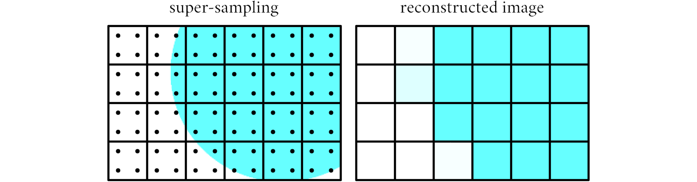
Figure 5.23. When computing an image using one ray per pixel, an object either covers a pixel or not. This ignores the case of pixels that are partially covered by objects, resulting in jagged edges.
One drawback of the previous approach is that the number of rays grows quadratically with the resolution of the per-pixel regular grid. We'll see later in the book that we can use a more general approach for computing averages which is to take sample locations randomly in the pixel. This may seem odd at first, but we will show later that it is in fact very helpful in combination with techniques used to compute illumination. We can generate random points in the pixel by just adding two random numbers \(\boldsymbol{\xi} \in [0,1)^2\) to the pixel indices \(\mathbf{i}\) and rescale the sum by the image resolution \(\mathbf{r}\). All together, we can write the pixel estimate, shown in Figure 5.24, as
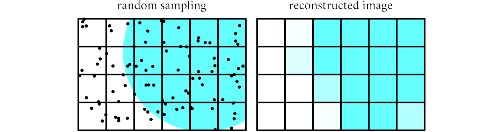
Figure 5.24. We can get a better approximation of the pixel color by using multiple rays per pixels, obtained by randomly picking locations in the pixel's area. This simple method work best in combination with techniques used to compute illumination.
The simplest preview image we can generate is to assign the material color of the intersection point, if that exists, or zero otherwise, as shown in Figure 5.25. If we write with \(\mathbf{k}_c\) the material color at the intersection point \(\mathbf{p}\), we can write the illumination \(\mathbf{L}_i(\mathbf{e}, \mathbf{d})\) associated with the ray \((\mathbf{e}, \mathbf{d})\) as
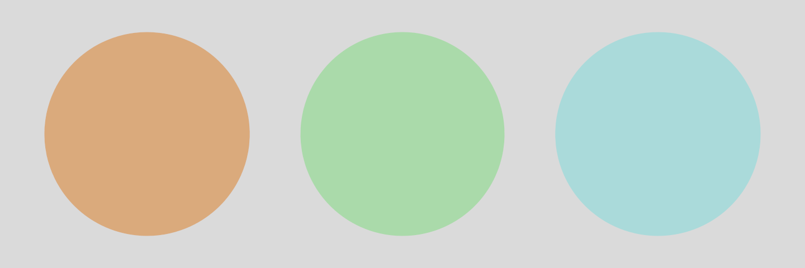
Figure 5.25. Ray tracing can be used to generate previews of virtual environments.
5.13. Shading
We can generate more realistic images by simulating the interaction of light with surfaces. This is sometimes called shading in graphics. Let us consider the simple case of matte surfaces illuminated by a light source small enough to be approximated with a single point. To compute the illumination reflected by the surface, we need to determine how much illumination reaches a small patch on the surface from a thin beam of light emitted by the light source towards the surface. As shown in Figure 5.26, the amount of illumination that reaches the surface depends on the cosine \(|\mathbf{i} \cdot \mathbf{n}|\) of the angle between the beam direction \(\mathbf{i}\) and the surface normal \(\mathbf{n}\). This is akin to what happens if you put a hand in a stream of water. If your hand is parallel to the water flow, you feel no resistance. If it is orthogonal to it, you feel pressure from the water. Same thing here, except that we consider illumination.
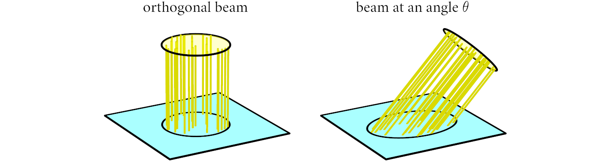
Figure 5.26. The amount of illumination that reaches a point from a light beam depends on the cosine between the beam direction and the surface normal.
The second aspect of this computation is to determine how much illumination the beam carries when it reaches the surface. In general, the farther away a light source is, the less it illuminates objects, for example think of a candle. The motivation for this is that energy is conserved, but as light travels in space it is spread across a larger area the further it travels. You can intuitively picture this by thinking of having the light source energy spread across the surface of a sphere that gets larger as it travels through space. For point lights, we conserve energy if the beam illumination decreases proportionally to area of a sphere centered at the point light source. This is illustrated in Figure 5.27. If we indicate with \(\mathbf{I}\) the intensity of a light source at position \(\mathbf{s}\) and with \(\mathbf{L}_i(\mathbf{p}, \mathbf{i})\) the illumination that comes at a point \(\mathbf{p}\) from the direction \(\mathbf{i}\), we can write the illumination due to a point light source as
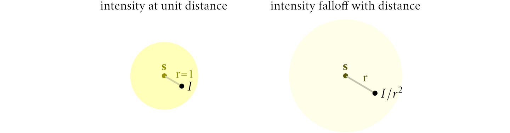
Figure 5.27. The amount of illumination that reaches a surface from a point light decreases with the square root of the distance between the light and the surface.
We can compute the illumination \(\mathbf{L}_r(\mathbf{p},\mathbf{o})\) reflected by a surface point \(\mathbf{p}\) in the direction \(\mathbf{o}\) as the product of the surface color \(\mathbf{k}_c\), the light intensity \(\mathbf{I}\), the cosine of the angle between the incoming direction \(\mathbf{i}\) and the surface normal \(\mathbf{n}\), divided by the square of the distance between the light position \(\mathbf{s}\) and the surface point \(\mathbf{p}\). The direction \(\mathbf{o}\) is just the opposite of the ray direction \(\mathbf{d}\), so \(\mathbf{o}=-\mathbf{d}\). When taking the cosine, we should be careful to only consider the cases where it is positive, since light cannot reach the surface "from below". We can write this shading model, illustrated in Figure 5.28, as
Shadows can be added quite easily for this case. A point is in shadows if there is an object blocking the light in its path from the light source to the surface. We can test for occlusion by casting a ray from the shaded point to the light source, and check whether there is an intersection and whether the intersection's distance is less than the distance to the light, as illustrated in Figure 5.28. It is common to encode this test as a visibility function \(V(\mathbf{p},\mathbf{s})\) that is one if the point is visible from the light source, and zero otherwise. We can write shading with shadows as
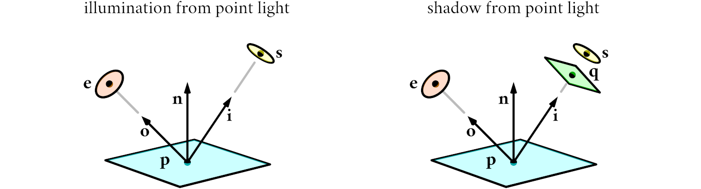
Figure 5.28. A surface illuminated by a point light. In this case, shadows appear if the path to the light source is blocked by another surface.
We can easily support multiple lights by summing over a list of point lights, and add a constant term \(\mathbf{I}_a\) to account for the average illumination of the environment coming from all other source. Figure 5.29 shows an image rendered with this shading model, that we write as
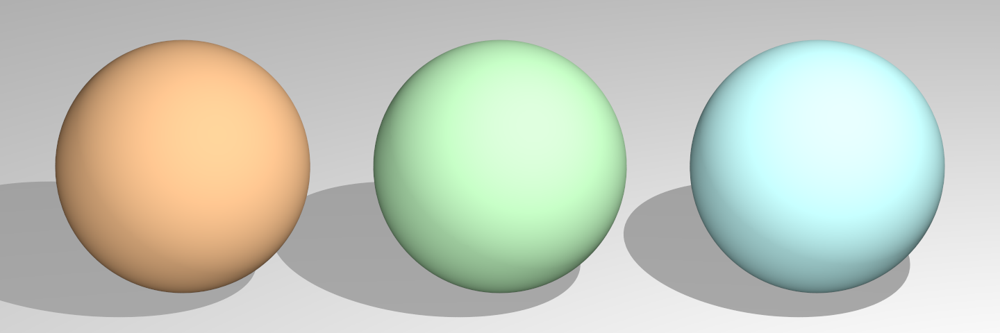
Figure 5.29. A scene with matte surfaces lit by a point light.
We could add more features to the previous shading equations to simulate more lighting effects, such as reflections and refractions. But doing so would introduce an ad-hoc treatment of shading effects that would not produce realistic images in the end. In a followup chapter, we will see how to use ray tracing to simulate the behavior of lighting in real-world scenes by using a more comprehensive approach, founded on the mathematics of light transport. To gain some intuition on how this works, the last sections of this chapter will present a shading model that simulates the interaction of light in the environment without deriving it from first principles. Feel free to skip it if you prefer to delve straight into the formal treatment of light transport.
5.14. Textures
As discussed in the previous chapter, textures are images that represent variations of the material parameters. Textures are applied to surfaces by assigning texture coordinates \(\mathbf{s}_i\) to each triangle vertex \(\mathbf{p}_i\). We compute texture coordinates \(\mathbf{s}\) for points \(\mathbf{p}\) inside the triangle by interpolation with barycentric coordinates \(\mathbf{u}\), computed during intersection, as
Texture coordinates can be used to lookup the value from the texture using linear interpolation as described in the image chapter. Differently than images, we often want to repeat the same texture to cover large surfaces, which can be obtained allowing texture coordinates to be outside of the \([0,1]\) range, and using the modulus operation to bring them back to the canonical domain. Also, texture values should always be linear since they either represent HDR illumination or linear material parameters. For this reasons, LDR textures need to be converted to linear space before being used. We report here the linear interpolation function from the image chapter, adapted to handle texture coordinates outside of the unit square. Given a texture image \(\mathbf{T}\) of size \(\mathbf{r}\), we can compute the texture color \(\mathbf{T}(\mathbf{s})\) at texture coordinates \(\mathbf{s}\) as
Adding texture to an image increases the believability of the renderer, as shown in Figure 5.30.
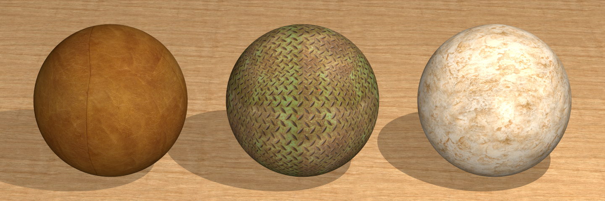
Figure 5.30. A scene with textured matte materials lit by a point light. Textures courtesy of PolyHaven.
Textures are also used in environment maps. In this case, texture coordinates depend on the ray direction \(\mathbf{d}\). In our implementation, environments are mapped using spherical coordinates oriented along a frame \(\mathbf{F}\). To lookup the environment texture, we compute the two spherical angles of the ray direction in local coordinates \(\mathbf{d}^l\), and map them to the \([0,1]^2\) range, as
5.15. Computing Illumination
In the real-world, illumination comes to a point not just from point lights, but from all other surfaces either because they emit light or because they reflect it. In the previous shading model, we use an ambient lighting term to account for this. To compute realistic illumination, we want instead to gather light from all possible directions, not just from the lights. This is not strictly possible since we cannot sample all possible directions. Instead, we will compute an approximation by picking a fixed, but rather large, number of directions and gather illumination from those. But picking these direction is problematic since we do not know which ones carry the most light. Instead we'll just pick them at random, with each pixel picking different directions. In this manner, we will eventually account for all lighting effects as more directions are considered. We will see later in the book that this is mathematically sound and in fact quite elegant. From these random directions, we gather illumination by sending a ray from the shaded point towards the random direction. At the intersected points, we recursively evaluate the same procedure, up to a fixed number of bounces.
But written this way, we would get an exponential explosion in the number of rays. We use many camera rays to get anti-aliasing, and for each of them, we would need many rays to estimate illumination. Even more, as we bounce illumination on nearby objects, more rays are spawn. This gives an exponential growth of computation that is not feasible if implemented verbatim. To solve this issue we observe that if we are already taking multiple rays for each pixel, we can just use a single direction, chosen at random, to estimate the illumination for each camera ray. In this manner, we'll eventually account for all incoming directions, as more rays are cast from the pixel. This solves the computational growth problem we had before in an elegant manner.
So far, we simply mention random directions without begin specific about how to generate them. One possibility would be to send rays uniformly in the hemisphere above the shaded point. This would work except that rays that are almost parallel to the surface would have little contribution since they are weighted by the cosine of the incoming direction. A better alternative is to pick incoming directions with probability proportional to their cosine with the normal. In this case, we need to correct the illumination estimate by dividing it by the cosine, to account for the fact that some directions are picked more likely than others, this their contribution is higher. Since the cosine is at the numerator and denominator, it cancels out, so we do not report it in the shading equation.
To start writing this more realistic model, we first define the illumination \(\mathbf{L}_o(\mathbf{p}, \mathbf{o})\) that leaves a point \(\mathbf{p}\) in the direction \(\mathbf{o}\) as the sum of the emitted illumination \(\mathbf{L}_e(\mathbf{p}, \mathbf{o})\) and the reflected one \(\mathbf{L}_r(\mathbf{p}, \mathbf{o})\). The emitted illumination models light source that emit light on their own. The reflected one model all other materials that reflect light from the environment around them. This is illustrated in Figure 5.31, and written as
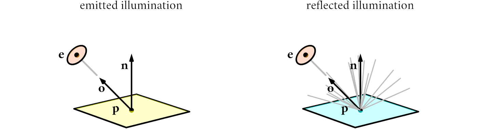
Figure 5.31. The illumination that leaves a surface is the sum of the emitted illumination and the reflected illumination.
The emitted illumination is a property of the surface material. We model surfaces that emit light by setting the emitted illumination \(\mathbf{L}_e(\mathbf{p}, \mathbf{o})\) as a material value \(\mathbf{k}_e\). Since we model surfaces that enclose opaque objects, lights in only emitted in the upper hemisphere, while no emission happens in the lower one. Accounting for these considerations, we write the emitted radiance as
We model the reflected illumination for matte surfaces by randomly choosing a direction, with probability proportional to the cosine with the normal, and computing the reflected radiance \(\mathbf{L}_r(\mathbf{p}, \mathbf{o})\) as the product of the incoming illumination \(\mathbf{L}_i(\mathbf{p}, \mathbf{i})\) at the point and the material color \(\mathbf{k}_c\). This is shown in Figure 5.32. In the product, we skip the cosine since we account for it by choosing incoming directions appropriately.
We generate random directions with probability proportional to the cosine. We do so by taking two random numbers \(\boldsymbol{\xi} \in [0,1)^2\) and map them to the two angles in spherical coordinates, to obtain a direction in local coordinates \(\mathbf{i}^l=[\cos(2 \pi \xi_1) (1 - \xi_2), \sin(2 \pi \xi_1) (1 - \xi_2), \sqrt{\xi_2}]^T\). We then transform this direction \(\mathbf{i}^l\) to its world space equivalent \(\mathbf{i}\) using a frame \(\mathbf{F}_\mathbf{n}\) whose vertical axis is the surface normal \(\mathbf{n}\). Later in the book we'll show that the reported transformation generates the proper directions. Putting it all together, we obtain
The incoming illumination \(\mathbf{L}_i(\mathbf{p}, \mathbf{i})\) is either the illumination \(\mathbf{L}_o(\mathbf{q}, -\mathbf{i})\) leaving the first visible point \(\mathbf{q}\) along the ray \((\mathbf{p}, \mathbf{i})\) or the environment illumination \(\mathbf{E}(\mathbf{i})\) if no intersection occurs. This is shown in Figure 5.32, and written as
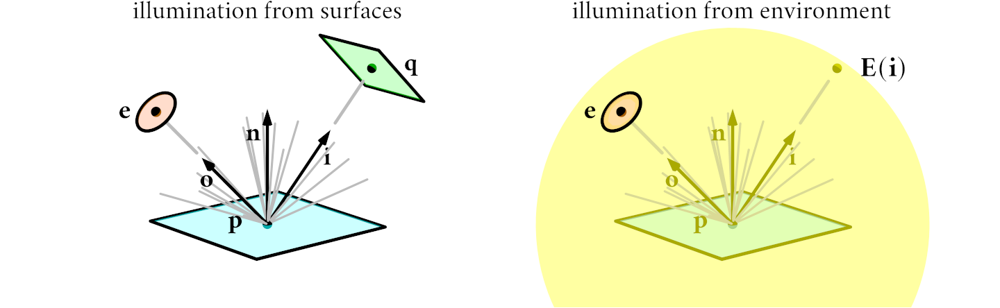
Figure 5.32. We gather illumination by averaging the contribution from a set of randomly selected directions. For each direction, the incoming illumination can come from the first visible point along the chosen direction, or the environment illumination is no intersection occurs.
Figure 5.33 shows a scene lit by a constant environment map that is rendered with the shading model shown so far.
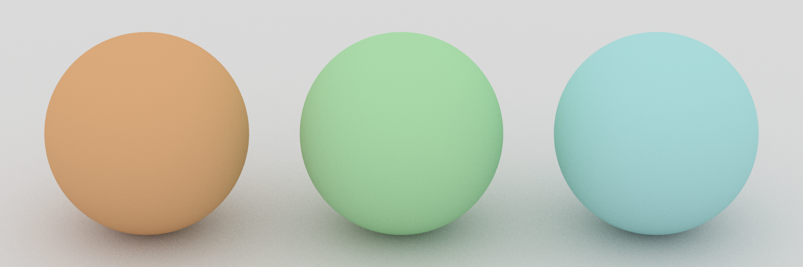
Figure 5.33. A scene lit by constant environment illumination.
You may be wandering how we account for illumination from light sources since we do not specifically handle them. In our shading model, we gather illumination from light source indirectly since emission is accounted with the emitted illumination, as shown in Figure 5.34. So if any ray in the incoming directions hits an emitting surface, it will pick up the emission from it. In fact, shadows from emissive surfaces are also accounted for. In this case, what will happen is that some rays sent toward the light will hit the emissive surface while nearby rays may hit an occluder, forming a visible shadow.
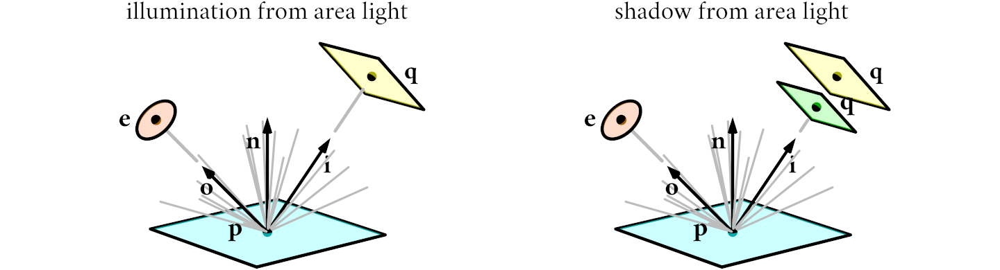
Figure 5.34. Illumination from emissive surface is accounted for without explicitly sampling from them.
Figure 5.35 shows a scene lit by both area lights and a constant environment map that we can render with the rendering features shown so far.
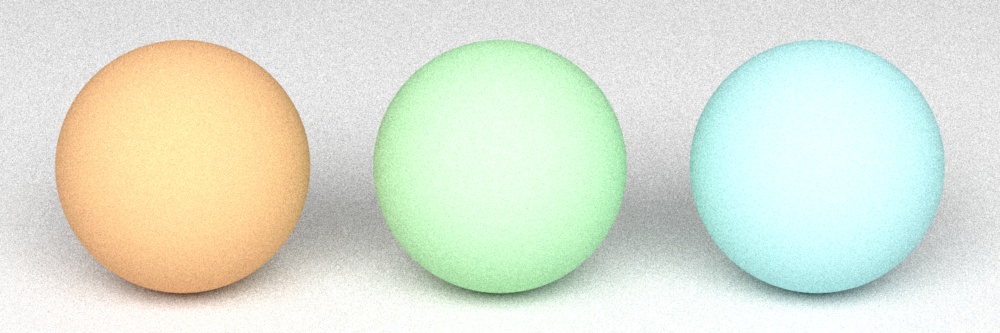
Figure 5.35. A scene lit by two area lights and an environment map.
We can add textures by modulating the material parameters \(\mathbf{k}_e\) and \(\mathbf{k}_c\) and the environment illumination \(\mathbf{E}\). Figure 5.36 shows a textured scenes rendered in this manner.
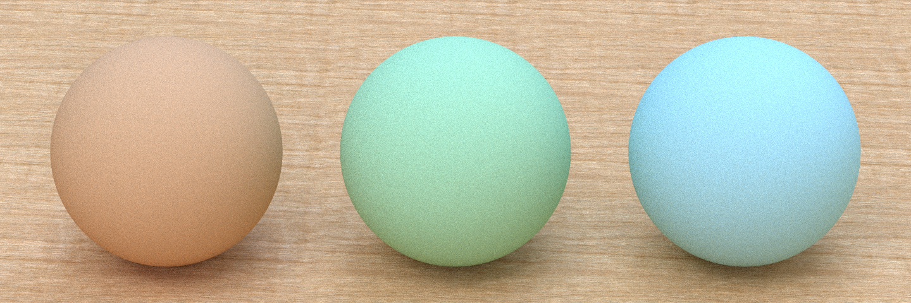
Figure 5.36. A textured scene lit by an textured environment map. Environment and textures courtesy of PolyHaven.
5.16. Image Accuracy
The renderer we wrote so far is already quite capable and can compute accurate images for a high-enough number of samples. If we render images with a smaller number of samples, visible artifacts appear in the form of noise. Noise appears since each pixel sends rays in different directions, which means that they compute a different approximation of the true illumination. The error in the approximation in \(\mathcal{O}(1/\sqrt{n})\), which makes the algorithm not particularly efficient. Figure 5.37 shows how the rendered image changes as we increase the number of samples.
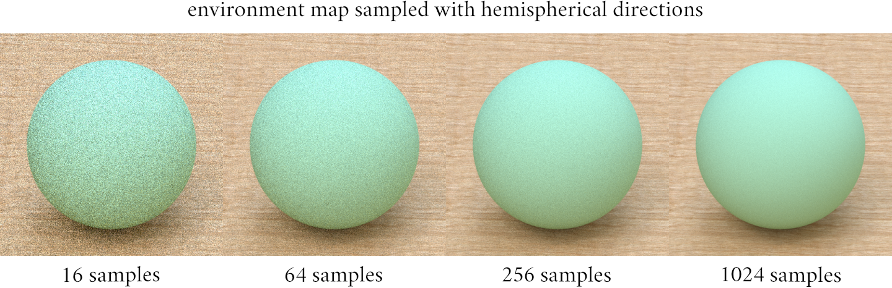
Figure 5.37. Images of a scene, lit by an environment map, rendered with a different number of samples.
Errors are more pronounced in scenes lit by a relatively smaller light source and no environment, such as the one shows in Figure 5.38.
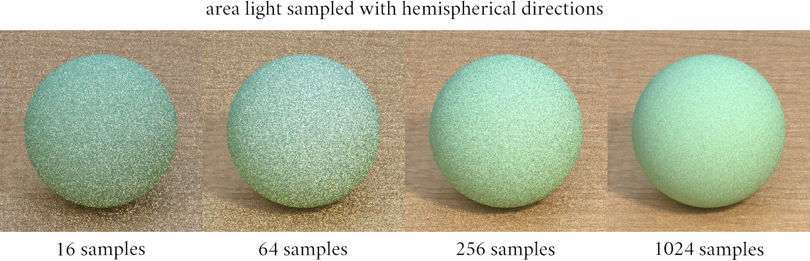
Figure 5.38. Images of a scene, lit by a relatively small light, rendered with a different number of samples.
Most algorithmic improvement in ray tracers aim at reducing error by either making the ray casting operation faster or sending rays in directions where they can gather more light.
As an example of reducing noise in the image above, we can observe that the likelihood of reaching the light by randomly picking direction is not that high. If the light is not reached before the path ends, the entire path is black, so it has no contribution to the final image. To ameliorate the problem we can send rays directly towards the light source. Compared to our point lighting example, our light source here is not a single point but it has a finite area. What we will do is to randomly pick points on the light and send rays to it as we did for point lighting. This is shown in Figure 5.39. We account for shadows by testing whether each randomly-picked point on the light is occluded using ray casting, in the same manner as we did for point lighting.
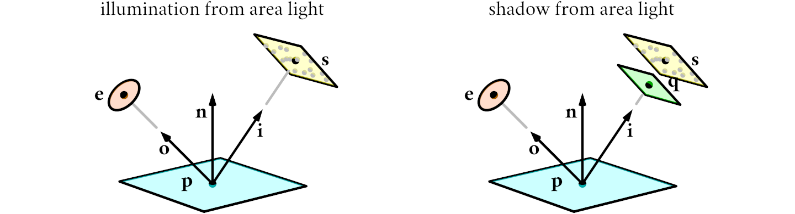
Figure 5.39. We can account for illumination from emissive surface by averaging the contribution of randomly picked points on the light, and test for shadows by sending rays towards those points.
We will not derive the formulas for this method here since they require more concepts that are better introduced in a followup chapter. Instead, we show in Figure 5.35 that sampling the lights directly reduce noise in this case.
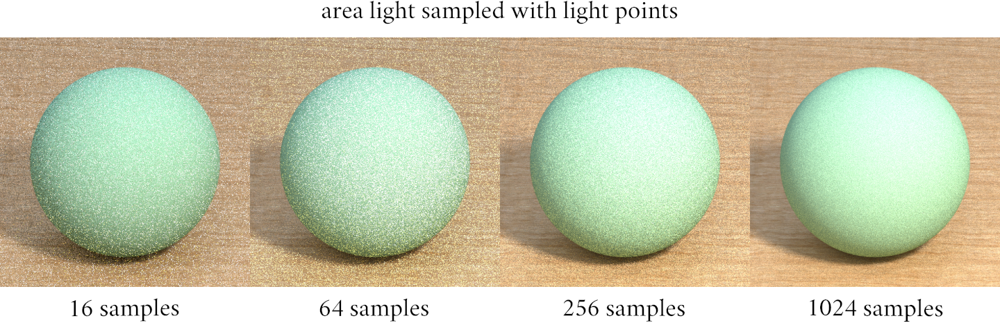
Figure 5.40. Images of a scene, lit by a relatively small light, rendered with a different number of samples. Sampling the light reduces noise.
5.17. Handling Materials
Materials differ in the manner in which the scatter light at the object surface. In this section, we'll write the equations to approximately simulate the different materials behaviors. The shader will have the same structure as the one for matte surfaces, namely we will pick a direction to sample illumination from and recursively send rays to it. Different material differs in the directions chosen.
Matte surfaces scatter light in all directions equally and are the ones that we have considered thus far. To better compare them to other materials, we recap here the equation used to approximate their reflected illumination. We simulate matte material by sending random rays with probability proportional to the cosine, and gather incoming illumination along those rays as
Polished reflective surfaces, like chromed engines and jewelry, scatter light mostly around a single direction, and the appear like mirrors colored by the surface color \(\mathbf{k}_c\). We can simulate these surfaces by sending rays in the reflected direction \(\mathbf{i}_\text{reflection}\), which is the outgoing direction \(\mathbf{o}\) rotated around normal by 180 degrees, which is computed as \(\mathbf{i}_\text{reflection} = - \mathbf{o} + 2 \cdot (\mathbf{n} \cdot \mathbf{o}) \cdot \mathbf{n}\), as shown in Figure 5.41.
Most reflective surfaces are made of metals whose colors changes with the incoming angle, varying slightly from a colored surface, when viewed from above, to a perfectly white surface, when viewed at grazing angles. This behavior is explained by the Fresnel equations, that relate the surface color to the angle of incoming illumination. These equations are particularly complex for metals, and beyond our needs. Instead, we will use an approximation due to Christophe Schlick, that approximates the Fresnel term \(F_s(\mathbf{k}_c,\mathbf{n},\mathbf{o})\) as the linear blend between the surface color \(\mathbf{k}_c\) and white, where the blending weight is the cosine of the incoming direction raised to the fifth power. Figure 5.41 shows a plot of this function. Putting it all together, we can write the shading equation for a reflective surface as
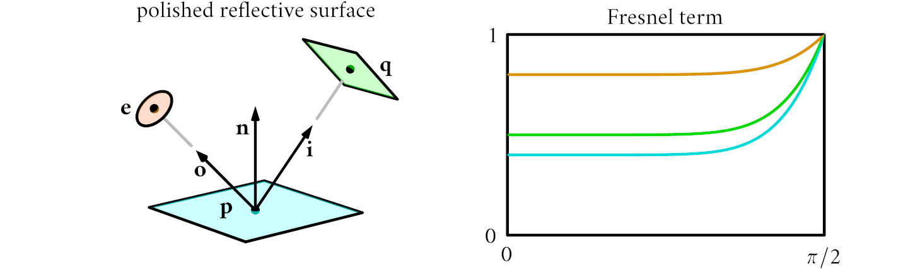
Figure 5.41. Polished surfaces reflect illumination mostly around a single direction, with a color predicted by the Fresnel equations.
Figrue 5.10 shows an image of a scene with polished reflective surfaces lit by an environment map.
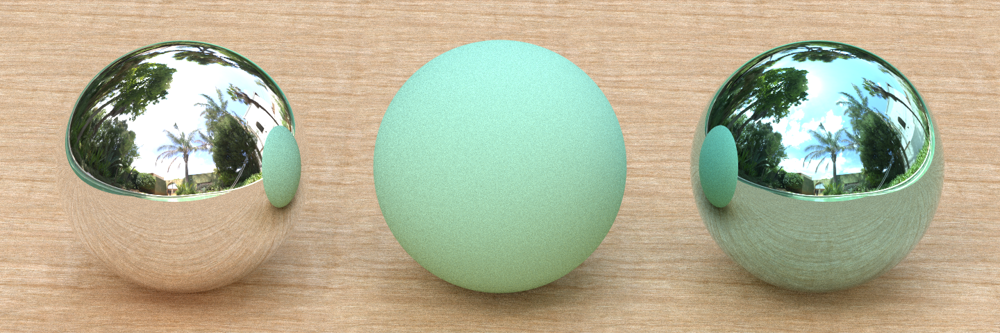
Figure 5.42. A scene with polished reflective surfaces.
Polished transparent surfaces, like glass windows and plastic bottles, let most light through the surface, while scattering a small amount of light in the reflected direction. The amount of light scattered in the reflected direction is governed by the Fresnel equations. In this case though, the scattered light in the normal direction is very small, around four percent for many surfaces, so the change in behavior when viewing the surface at different angles is a lot more significant than for metals. For these materials, reflections are not colored. The color of the surface comes from the absorption of light as it goes through the object. As an example, consider a colored glass bottle. In this chapter, we are only treating thin transparent surfaces, where refraction can be ignored, which is the most common case found in the real-world.
We could simulate transparent surfaces by sending two rays, one in the reflected direction, and one that continues in the same direction with which we reached the surface. But this would lead once again to an exponential growth of rays, that we want to avoid. Instead we will choose a direction at random for each camera ray. In this case, the possible directions are either the reflected or transmitted one. If we choose with equal probability, we'll waste computation since either one or the other carries most of the illumination for any given outgoing direction. Instead, we will choose with a probability that is proportional to the Fresnel term, and, in doing so, remove the Fresnel as a weight in the equations to avoid "double-counting" it. Later in the book, we will show why this is sound, but intuitively, a direction has more weight if it gets chosen more, so there is no need to re-weight it. The shading model for transparent surfaces is illustrated in Figure 5.43, and is written as
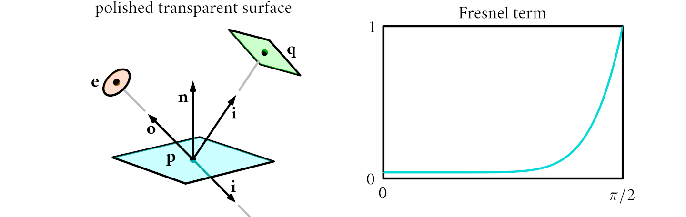
Figure 5.43. Polished transparent surfaces reflect a small amount in the mirror direction, while letting most light thought the object.
Figrue 5.10 shows an image of a scene with polished transparent surfaces lit by an environment map.
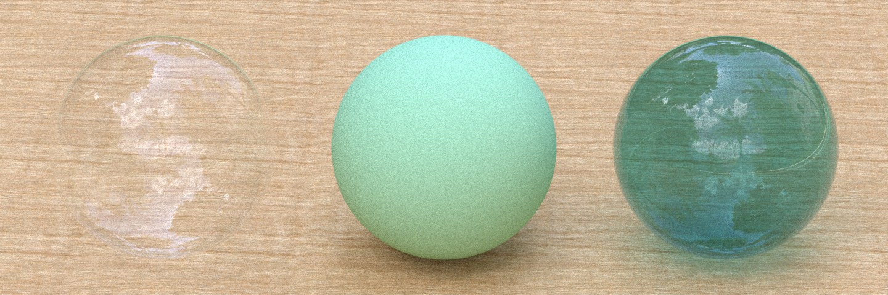
Figure 5.44. A scene with polished transparent surfaces.
Polished glossy surfaces, such as painted wood or plastics, can be though of as made of a layer of transparent paint on top of a matte surface. In this case, the light that the transparent layer transmits is reflected out by the underlying matte surface. Accounting for both layers, lights is reflected partially in the mirror direction, with probability equal to the Fresnel term, and partly reflected in all directions by the matte layer, which also gives the color to the surface. We can simulate these surfaces by choosing, with probably equal to the fresnel term, to send rays according to the matte layer or to the reflecting one. The shading model for polished glossy surfaces can be written as
Figrue 5.10 shows an image of a scene with polished transparent surfaces lit by an environment map.
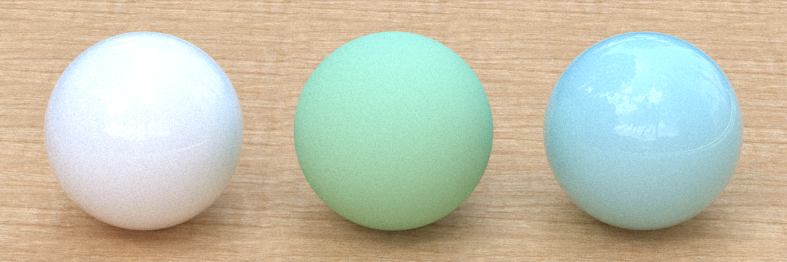
Figure 5.45. A scene with polished glossy surfaces.
In the real-world, most surfaces are not as polished as the ones we rendered so far, but have a rougher appearance either because they are naturally rougher or due to aging and weathering. When the surface details are large enough, we use textures to model the material variations. For surface details that are minuscule, i.e. smaller than the beam of light we are considering, we model details as part of the surface material response. A large class of rough material can be simulated with microfacet models, that model statistically the material response of surfaces made of tiny facets that scatter lights as one of the materials we discussed above. In this chapter, we present a simple but approximate model, that produces believable images with ease. Later in the book, we will study microfacet models in more details.
We consider a surface made of minuscule facets of the same polished material. We model the surface by describing the distribution of the microfacets normals. Naturally, most facets will be oriented along the microscopic surface normal, but some will have different orientations. We describe the microfacet distribution with a function \(D(\mathbf{m},\mathbf{n})\) that is proportional to the ratio of microfacets whose normal \(\mathbf{m}\) form a given angle with the macroscopic normal \(\mathbf{n}\). The simplest of these functions is just the cosine of the angle raised to some power that depends on the surface roughness \(k_r \in [0,1]\), that goes from zero for a polished surface, to one for a very rough one. We adopt the distribution function due to Phong, plotted in Figure 5.46, and written as
We can render rough surfaces in a relatively straightforward manner. For each ray, we randomly select a microfacet normal \(\mathbf{m}\), and then use that normal when computing the reflected direction \(\mathbf{i}_\text{rreflection}\). This will result in reflected directions that are contained in a cone around the mirror direction. The size of the cone depends on the surface roughness. If we pick the microfacet normals with probability proportional to the microfacet distribution, we obtain an approximation of the rough reflection. We generate microfacet normals by transforming two random numbers in a manner similar to the matte case. More details will be given in later chapters. For now, we just write the final shading model for rough reflection, illustrated in Figure 5.46, as
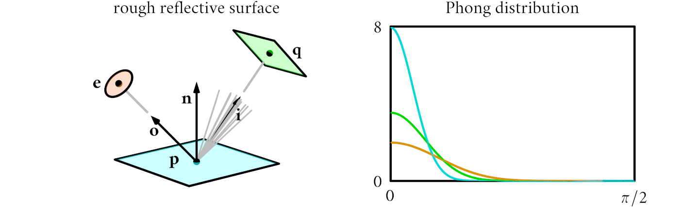
Figure 5.46. Rough surfaces reflect most light in a small cone around the mirror direction (left), which is the result of the orientation of the microfacets that make the surface (right).
Figure 5.47 shows a scene with rough reflective surfaces.
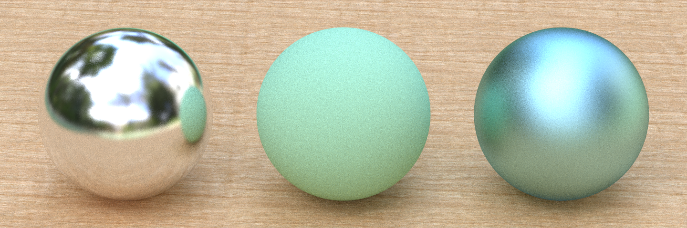
Figure 5.47. A scene with rough reflective surfaces.
We can similarly derive a shading model for rough glossy surfaces, by combining a rough reflection with an underline matte model. Figure 5.48 shows a scene with rough glossy surfaces, whose shading model is written as
Figure 5.48. A scene with rough glossy surfaces.
One last feature we want to model is surfaces that have an associate coverage stored in textures. This can be helpful to model detailed geometry without requiring a large numbers of triangles. Examples of these surfaces are chicken wires and tree leaves. We model these surfaces with the alpha channel of a texture. In the image chapters, we discussed how the alpha channel should be interpreted as coverage, which is the area of the pixel covered by the surface. We can model this in a manner similar to what we did for transparent surfaces. For each ray, we decide whether to shade the current point and compute the outgoing illumination \(\mathbf{L}_o(\mathbf{p}, \mathbf{o})\), or continue the ray by computing the incoming illumination \(\mathbf{L}_i(\mathbf{p}, -\mathbf{o})\), with a probability that is proportional to the coverage \(k_o\). Figure 5.49 shows a scene with textured coverage. We can write this shading model as
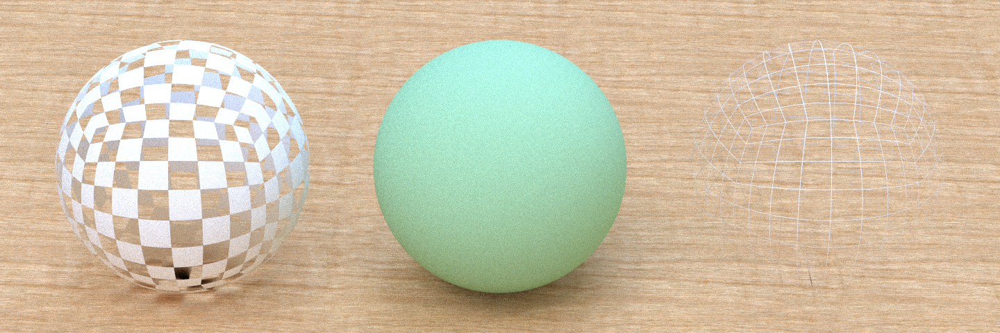
Figure 5.49. A scene with surfaces with textured coverage.
The renderer we wrote so far is already quite capable, as shown by the variety of materials in Figure 5.50 and Figure 5.51. The main concern with it is that it is quite inefficient. For example, the scene shown is rendered with thousands of samples, while noise is still visible. In a followup chapter, we will derive rendering algorithms from first principles, and show how to decrease noise by improving the efficiency of the renderer.
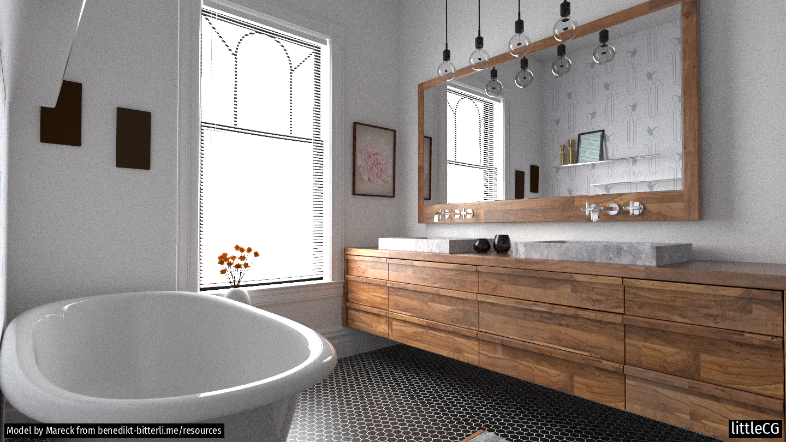
Figure 5.50. An interior scene showing different materials. Model courtesy of Mareck from Bitterli's Resources.
Figure 5.51. An interior scene showing different materials. Model courtesy of
Alex Treviño, from a cocept of Anais Maamar, from Blender.